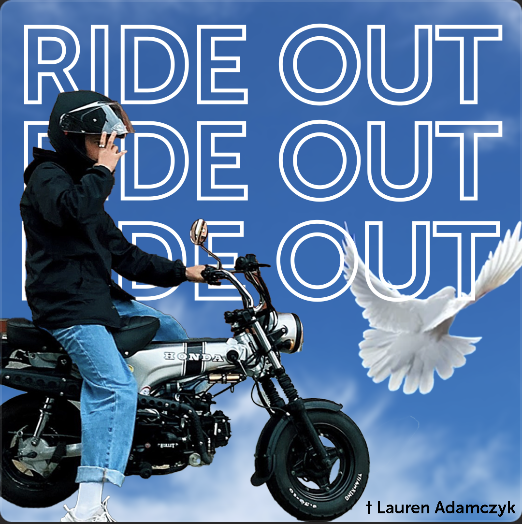
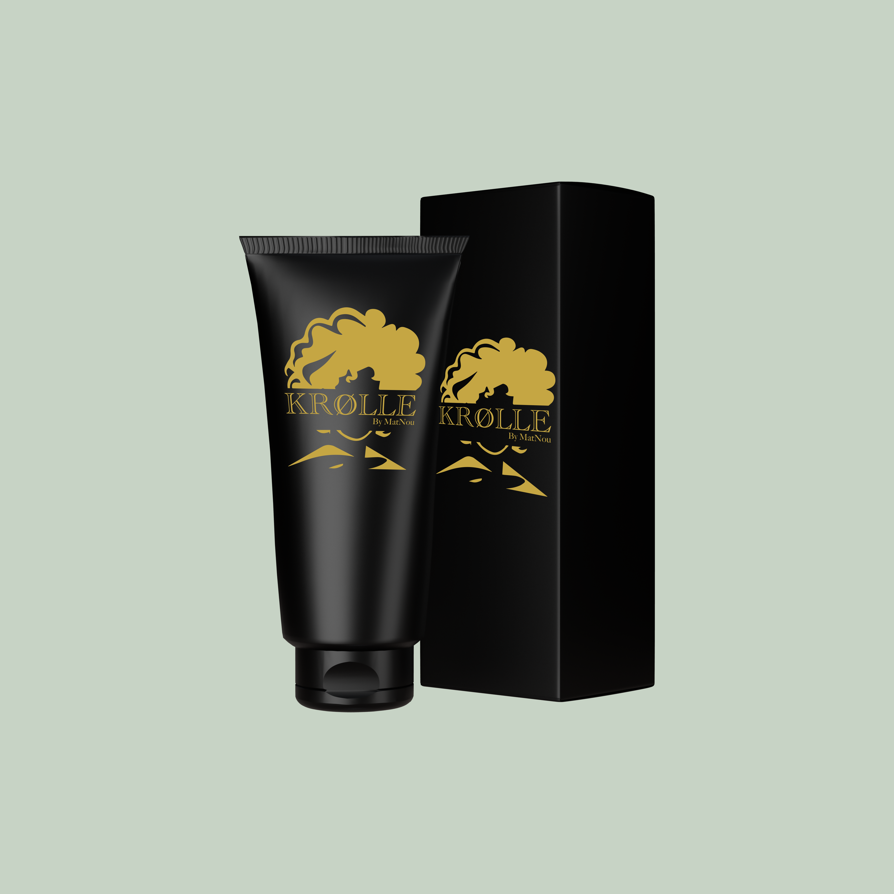

De allereerste creatie voor CrossFit Non Deficere was een ontwerp voor een trui.
Dit ontwerp ging verder dan alleen digitaal; het werd daadwerkelijk afgedrukt en in gebruik genomen
Naast de giftcard, heb ik een aangrijpende affiche gemaakt ter herdenking van een jonge ziel uit Hasselt.
Deze affiche werd gebruikt voor zijn 'ride out', een laatste scooter rit ter ere van zijn leven.
Vervolgens heb ik een logo met een wolf getekend.
Een logo voor Krolle Shampoo, speciaal ontworpen voor een krullen kapper.
Een unieke visuele identiteit die de essentie van krullend haar vangt met stijl en finesse.
Een ander opmerkelijk project, het logo voor de WPL2-case is klaar.
Een samensmelting van creativiteit en strategie
Afsluitend moesten we voor digital branding een hele case uitschrijven en
ik had een logo gemaakt voor een druk bedrijf.